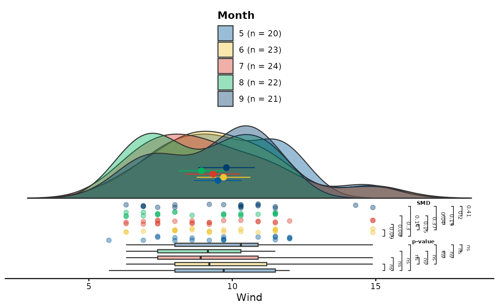

estimate_gps() computes generalized propensity scores for
treatment groups by applying a user-defined formula and method. It returns
a matrix of GPS probabilities for each subject and treatment group
Usage
estimate_gps(
formula,
data = NULL,
method = "multinom",
link = NULL,
reference = NULL,
by = NULL,
subset = NULL,
ordinal_treat = NULL,
fit_object = FALSE,
verbose_output = FALSE,
...
)Arguments
- formula
a valid R formula, which describes the model used to calculating the probabilities of receiving a treatment. The variable to be balanced is on the left side, while the covariates used to predict the treatment variable are on the right side. To define the interactions between covariates, use
*. For more details, refer tostats::formula().- data
a data frame with columns specified in the
formulaargument.- method
a single string describing the model used for the calculation of generalized propensity scores. The default value is set to
multinom. For available methods refer to the Details section below.- link
a single string; determines an alternative model for a method used for estimation. For available links, see Details.
- reference
a single string describing one class from the treatment variable, referred to as the baseline category in the calculation of generalized propensity scores.
- by
a single string with the name of a column, contained in the
dataargument. The dataset will be divided by the groups created by the groupingbyvariable and the calculation of the propensity scores will be carried out separately for each group. The results will then be merged and presented to the user as a single GPS matrix.- subset
a logical atomic vector of length equal to the number of rows in the
dataarguments. Allows to filter out observations from the further analysis, for which the value of the vector is equal toFALSE.- ordinal_treat
an atomic vector of the length equal to the length of unique levels of the treatment variable. Confirms, that the treatment variable is an ordinal variable and adjusts its levels, to the order of levels specified in the argument. Is a call to the function
factor(treat, levels = ordinal_treat, ordered = TRUE.- fit_object
a logical flag. If
TRUE, the the fitted object is returned instead of the GPS matrix.- verbose_output
a logical flag. If
TRUEa more verbose version of the function is run and the output is printed out to the console.- ...
additional arguments, that can be passed to the fitting function and are not controlled by the above arguments. For more details and examples refer to the Details section and documentations of corresponding functions.
Value
A data frame of class gps with the number of columns equal to
the number of unique treatment variable levels plus one (for the treatment
variable itself) and the number of rows equal to the number of subjects in
the initial dataset. The original dataset used for estimation can be
accessed as the original_data attribute.
Details
The main goal of the estimate_gps() function is to calculate the
generalized propensity scores aka. treatment allocation probabilities. It
is the first step in the workflow of the vector matching algorithm and is
essential for the further analysis. The returned matrix of class gps can
then be passed to the csregion() function to calculate the rectangular
common support region boundaries and drop samples not eligible for the
further analysis. The list of available methods operated by the
estimate_gps() is provided below with a short description and function
used for the calculations:
multinom- multinomial logistic regression modelnnet::multinom()vglm- vector generalized linear model for multinomial dataVGAM::vglm(),brglm2- bias reduction model for multinomial responses using the Poisson trickbrglm2::brmultinom(),mblogit- baseline-category logit modelsmclogit::mblogit().polr- ordered logistic or probit regression only for ordered factor variables fromMASS::polr(). Themethodargument of the underlyingMASS::polr()package function can be controlled with thelinkargument. Available options:link = c("logistic", "probit", "loglog", "cloglog", "cauchit")
See also
csregion() for the calculation of common support region,
match_gps() for the matching of generalized propensity scores
Examples
## Example 1: multinomial bias-reduced model (brglm2) on `airquality`
if (requireNamespace("brglm2", quietly = TRUE)) {
library(brglm2)
# Initial imbalance of means
tapply(airquality$Wind, airquality$Month, mean, na.rm = TRUE)
# Formula definition
formula_air <- Month ~ Wind
# Estimating the generalized propensity scores using brglm2
gp_scores <- estimate_gps(
formula_air,
data = airquality,
method = "brglm2",
reference = "5",
verbose_output = TRUE,
control = brglm2::brglmControl(type = "MPL_Jeffreys")
)
# Filtering the observations outside the csr region
gps_csr <- csregion(gp_scores)
filter_which <- attr(gps_csr, "filter_vector")
filtered_air <- airquality[filter_which, ]
# Imbalance after csr
tapply(filtered_air$Wind, filtered_air$Month, mean, na.rm = TRUE)
# Visual inspection using raincloud
raincloud(
filtered_air,
y = Wind,
group = Month,
significance = "t_test"
)
}
#> Registered S3 methods overwritten by 'ggpp':
#> method from
#> heightDetails.titleGrob ggplot2
#> widthDetails.titleGrob ggplot2

## Example 2: ordered treatment, subset, by, and non-default link
if (requireNamespace("MASS", quietly = TRUE)) {
library(MASS)
# Prepare a clean subset of `airquality`
aq <- subset(
airquality,
!is.na(Month) & !is.na(Wind) & !is.na(Temp)
)
# Grouping variable used in the `by` argument
aq$Temp_group <- ifelse(
aq$Temp > stats::median(aq$Temp, na.rm = TRUE),
"high",
"low"
)
# Explicit order for the (ordinal) treatment variable
ord_month <- sort(unique(aq$Month))
gps_ord <- estimate_gps(
Month ~ Wind + Temp,
data = aq,
method = "polr",
link = "probit",
subset = NULL,
by = "Temp_group",
ordinal_treat = ord_month,
reference = "5"
)
}
#> Warning: There is no need to specify `reference` if `ordinal_treat` was provided. Ignoring the `reference` argument.